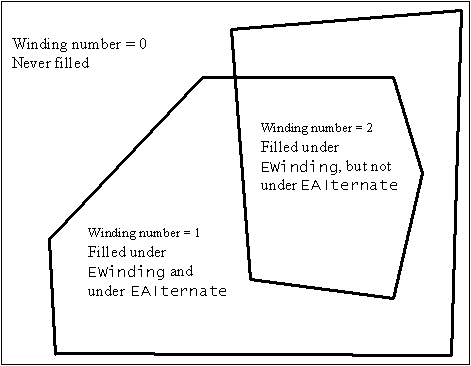

|
| |
The example code shown here demonstrates how to:
draw a polyline.
draw and fill a self-crossing polygon
The example code assumes the array of points used when drawing these shapes is defined as follows:
...
// set up an array of points for drawing a polyline and a polygon etc.
// will be used relative to top left of rectangle
TPoint point1(20,20);
TPoint point2(100,190);
TPoint point3(110,90);
TPoint point4(50,150);
TPoint point5(200,150);
CArrayFix<TPoint>* mypoints = new CArrayFixFlat<TPoint>(5);
CleanupStack::PushL(mypoints);
mypoints->AppendL(point1);
mypoints->AppendL(point2);
mypoints->AppendL(point3);
mypoints->AppendL(point4);
mypoints->AppendL(point5);
...
// switch statement with example cases
...
CleanupStack::PopAndDestroy(); // mypoints
You can draw a polyline using DrawPolyLine() from an
array of points.
...
// draw a polyline
gc.DrawPolyLine(mypoints);
...
|
The following example code illustrates how to draw a filled polygon
from an array of points. The polygon is self-crossing. Self-crossing polygons
can be filled according to one of two rules, TFillRule::EAlternate
(the default), or TFillRule::EWinding. These rules work with the
concept of a winding number, as shown in the following figure:

Winding numbers
EWinding fills all areas, while EAlternate
only fills areas with odd winding numbers.
EWinding fill
ruleUse SetBrushStyle() to set a cross-hatched brush
style.
Use DrawPolygon() to draw the polygon with the
EWinding fill rule.
...
// draw self-crossing polygon using the winding fill rule
gc.SetBrushStyle(CGraphicsContext::ESquareCrossHatchBrush);
gc.SetBrushColor(black);
gc.DrawPolygon(mypoints,CGraphicsContext::EWinding);
...
EAlternate fill
ruleUse SetBrushStyle() to set a diamond cross-hatched
brush style.
Use DrawPolygon() to draw the polygon with the
EAlternate fill rule.
...
// draw self-crossing polygon using the alternate fill rule
gc.SetBrushStyle(CGraphicsContext::EDiamondCrossHatchBrush);
gc.SetBrushColor(black);
gc.DrawPolygon(mypoints,CGraphicsContext::EAlternate);
...
Copyright ©2002 Symbian Ltd. 6.1-00174 |
|